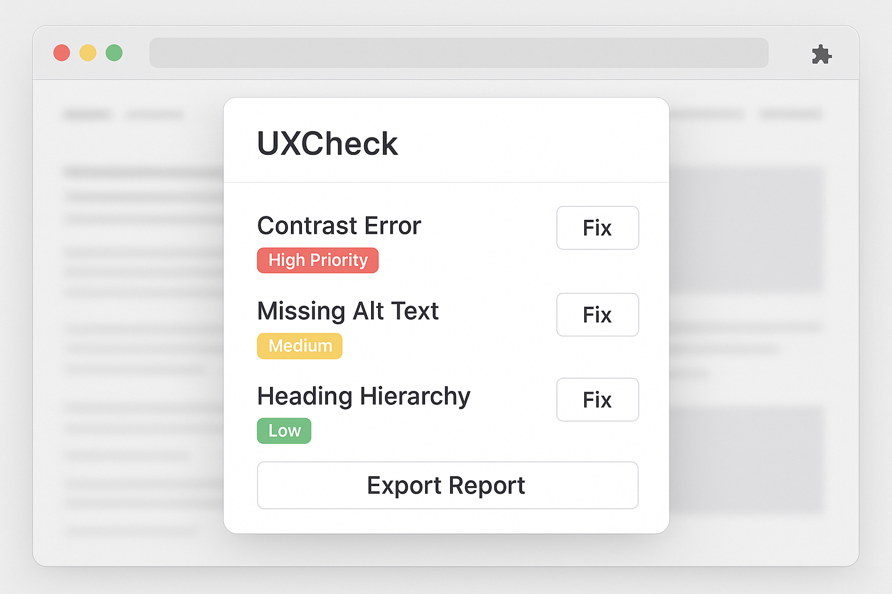

Instantly identify accessibility violations, contrast problems, and heuristic breakdowns without leaving your browser. Polished reports for professionals.

Stop wasting hours on manual checks. UXCheck automates the heavy lifting.
Automatic checks for WCAG 2.1 compliance, including ARIA labels, alt text, and roles.
Instant color contrast ratio calculations across the entire page with visual markers.
Visualize heading hierarchy (H1-H6) to ensure logical flow and SEO optimization.
Identify elements that prevent smooth keyboard navigation and focus management.
Add UXCheck to Chrome or Firefox. It lives in your toolbar, ready whenever you need it.
Navigate to any live website and click 'Run Audit'. UXCheck analyzes the DOM in real-time.
Review ranked issues with visual highlights. Export a professional PDF report for your clients.
Choose the plan that fits your workflow.
Join thousands of designers who use UXCheck to deliver pixel-perfect, accessible experiences.
Add to Chrome — It's Free